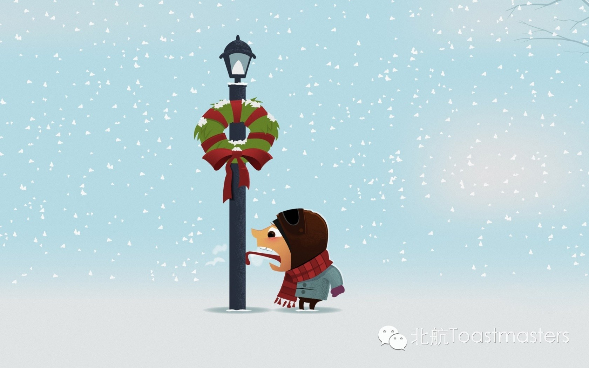
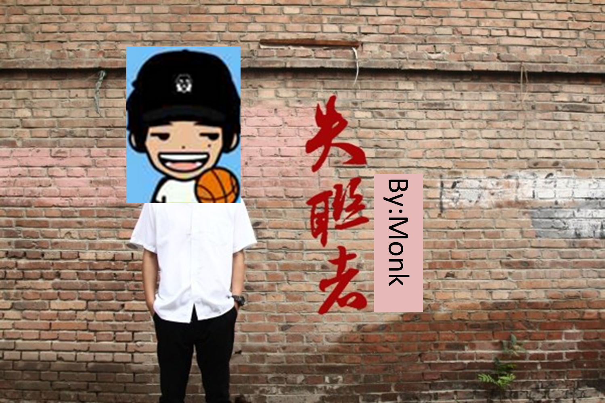

Winter Holiday
Time: 19:30-21:30, Friday, Jan. 23
Venue: Room G849, New Main Building, Beihang University

Toastmaster: Lucia
Table Topic Master: Joshua
Got train tickets to go back home?
Got answers to questions like "still haven't found a job YET?"
Got "lucky money" to give to your little nephews?
Got a long and ambitious to-do list for your winter vacation (hopefully you will not feel guilty afterwards)?
Got them or not, please come to the last meeting of Beihang Toastmasters for this term ! The brilliant ideas sparked here might prepare you to embrace a brilliant vocation!
Prepared Speech
Live in the Present
cc2 Jane
If you shed tears when you miss the sun, you also miss the stars, said Tagore. Embracing the moment is better than regretting for the already-gone or already-done. Let's welcome Jane the nurese to share her insights.
Prepared Speech
BE vs. AE
cc2 Doris
Every morden Chinese encouters a question, "Shall I learn to speak British English or its American counterpart?" (The truth is, in almost all cases, you either learn a mixture or, worse, Chinglish. ) But indeed, what is BE / AE and their differences? Linguistics master Doris (this name itself comes from a famous English writer, which might indicate something about the speakers ^_^) has words to convey!
Prepared Speech
My Past Six Months
CC3 Monk

Someone in this club has been misteriously away for half a year. Where has he been, or indeed, for some guests and new members, WHO is he? A misterious Monk is going to reveal his misterious past six months. Don't blink your eyes!
Map
Our meeting venue changed to RoomG849, New Main Building, Beihang University (北航新主楼G849房间). Click here to see large map. And you can phone to Keven for help.
TEL: 15810539853
See you in the meeting!

https://mp.weixin.qq.com/s/ADsAtqQNz1Eq2uuM8KVFSw
本页为抢救式本地归档，图文已永久保存。